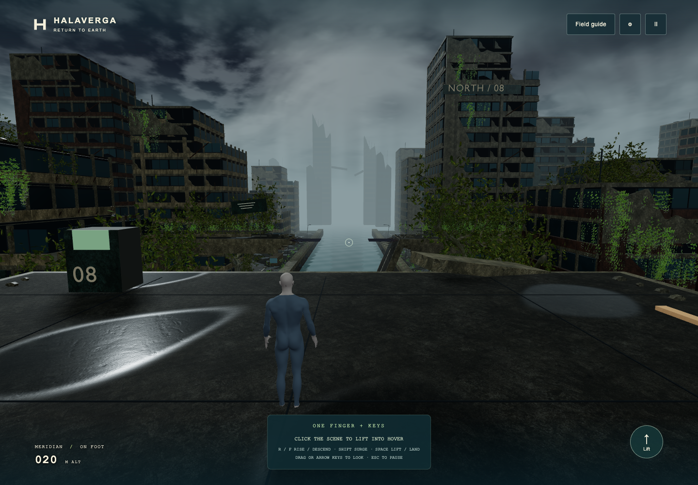
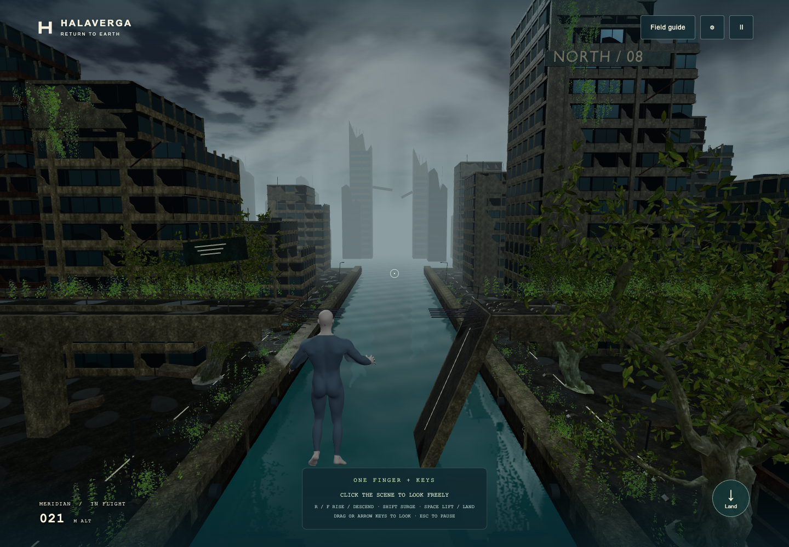
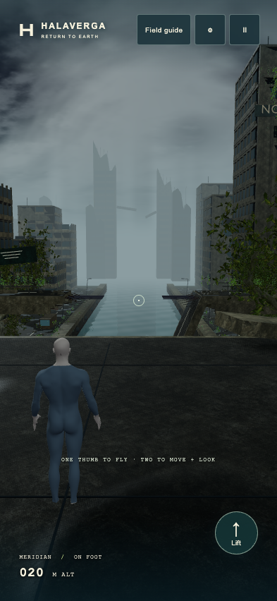

A heavy cloud ceiling closes over Meridian. Cold light catches the wet concrete; the distant city disappears into rain haze. The weather belongs to the arrival in 2113, eighty years after the district was destroyed.


